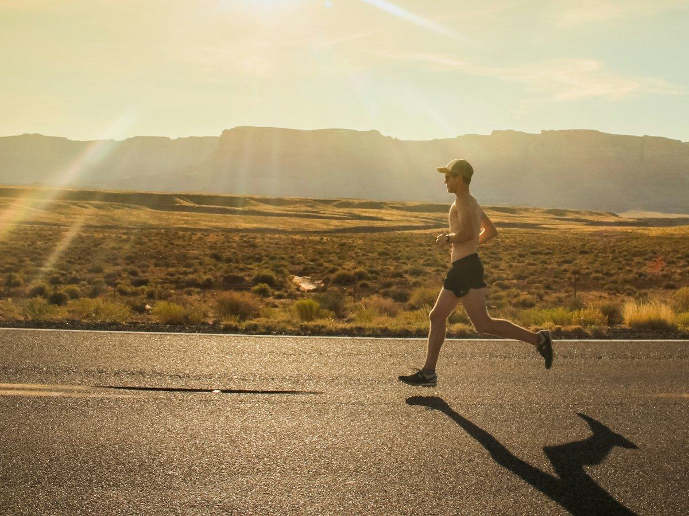
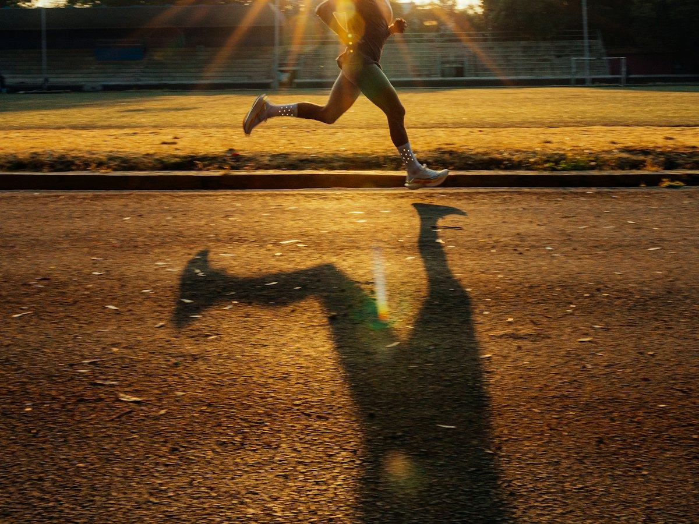

Hidratación
¿Cuánta agua hay que beber al día? Lo que dice la EFSA
Cuánta agua necesitas al día según la Autoridad Europea de Seguridad Alimentaria (EFSA), cuánta viene de la comida y cómo saber si bebes suficiente.
 Por el equipo editorial de Pombo AI
Por el equipo editorial de Pombo AI
12 nov 2026 · 6 min de lectura

Entrenar con calor exige más al cuerpo. Saber reconocer las señales a tiempo marca la diferencia entre un mal día y una urgencia.
Urgencia: si alguien tiene la piel muy caliente, está confuso o pierde el conocimiento tras hacer ejercicio con calor, llama al 112.

Aparecen sobre todo cuando se suda mucho durante una actividad intensa, en piernas, abdomen o brazos. El Ministerio de Sanidad recomienda parar, descansar en un sitio fresco, evitar el esfuerzo intenso durante varias horas, tomar zumos ligeros o bebidas deportivas diluidas en agua y consultar al médico si duran más de una hora.
Muchas personas restan importancia a síntomas como el cansancio intenso, el mareo o la debilidad, que pueden ser un agotamiento por calor y evolucionar a un golpe de calor si no se tratan. Ante estos síntomas: bebe agua a sorbos, ve a un lugar fresco, aflójate la ropa y descansa.
Se produce cuando el cuerpo pierde la capacidad de regular su temperatura y esta supera los 40 °C. La OCU señala entre sus síntomas la sensación de calor extremo, la piel seca y enrojecida y el pulso débil y acelerado. Es una urgencia médica: llama al 112 y, mientras llega la ayuda, lleva a la persona a la sombra y enfríala. Si los síntomas son graves, Sanidad desaconseja darle de beber.
El Ministerio de Sanidad recomienda reducir la actividad física y evitar el deporte al aire libre en las horas centrales del día. Es mejor entrenar a primera hora de la mañana o al final de la tarde.
Se habla de golpe de calor cuando la temperatura corporal supera los 40 °C. Es una urgencia: llama al 112.
Aviso: Este artículo es informativo y no sustituye el consejo de un médico o dietista-nutricionista. Si tienes una enfermedad, tomas medicación, estás embarazada o has tenido un trastorno de la conducta alimentaria, consulta con un profesional antes de cambiar tu alimentación.
Cuánta agua necesitas al día según la Autoridad Europea de Seguridad Alimentaria (EFSA), cuánta viene de la comida y cómo saber si bebes suficiente.
Cuándo basta con agua y cuándo tiene sentido una bebida deportiva con sodio e hidratos: qué dicen los estudios sobre el ejercicio de más de una hora.
Guía práctica basada en el consenso del American College of Sports Medicine: pérdida de peso por sudor, cantidades orientativas y riesgos de beber de menos o de más.